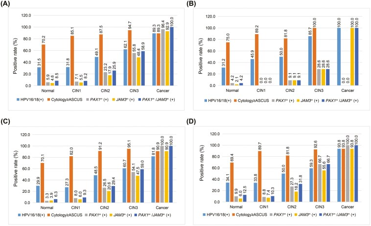

1Background & Objective
- Need: hrHPV primary screening needs an objective, high-specificity triage — cytology is operator-dependent.
- Objective: validate PAX1m/JAM3m for CIN3+ triage vs HPV16/18 & LBC in a large prospective cohort.
2Study Design
89.6%
methylation specificity
18.5
OR (12.1–28.7)
0.790
AUC (0.747–0.832)
- Setting: PUMCH opportunistic screening, prospective; endpoint CIN3+.
- Readout: ΔCt PAX1 ≤ 6.6 or ΔCt JAM3 ≤ 10.0.
- All ages: methylation AUC highest in every age stratum.
4,394
hrHPV+ cohort
1,105
histology-confirmed
28
cervical cancers
- Design: prospective METHY3; hrHPV+ women with LBC, genotyping & methylation.
- Comparator: HPV16/18(+) and LBC ≥ASCUS as current triage options.
- Endpoint: CIN3+ by histology; referral modeling.
- Age strata: <30 / 30–49 / ≥50 — methylation AUC highest in each.
- Cancer safety: all 28 cancers methylation(+); LBC/HPV16/18 missed some.
- Referral math: −20.6pp vs HPV16/18 · −61.2pp vs LBC referrals.
- Implication: objective triage fits HPV-based screening pathways.
- Scalable: qPCR-based, no cytology expertise — suits large-scale screening.
Positivity rises with grade in every age group; 28/28 cancers methylation(+).
3Methylation by Grade & Age

Fig. 2 Positivity by subgroup & age — methylation rises with grade, cancers 28/28.
Fig. Methylation positivity climbs with grade — 100% in cancer (28/28).
4Specificity — the Key Advantage
- OR 18.5 (12.1–28.7) — vs 4.24 (HPV16/18) & 4.44 (LBC), P<.001.
- Fewer false referrals: high specificity = fewer unnecessary colposcopies.
5Referral & Practice
−61.2pp
referrals vs LBC
−20.6pp
vs HPV16/18
0
cancers missed
- Younger women: higher specificity in minimally abnormal cytology — fewer colposcopies in <30 y.
- Objective: qPCR methylation — reproducible, no cytology expertise needed.